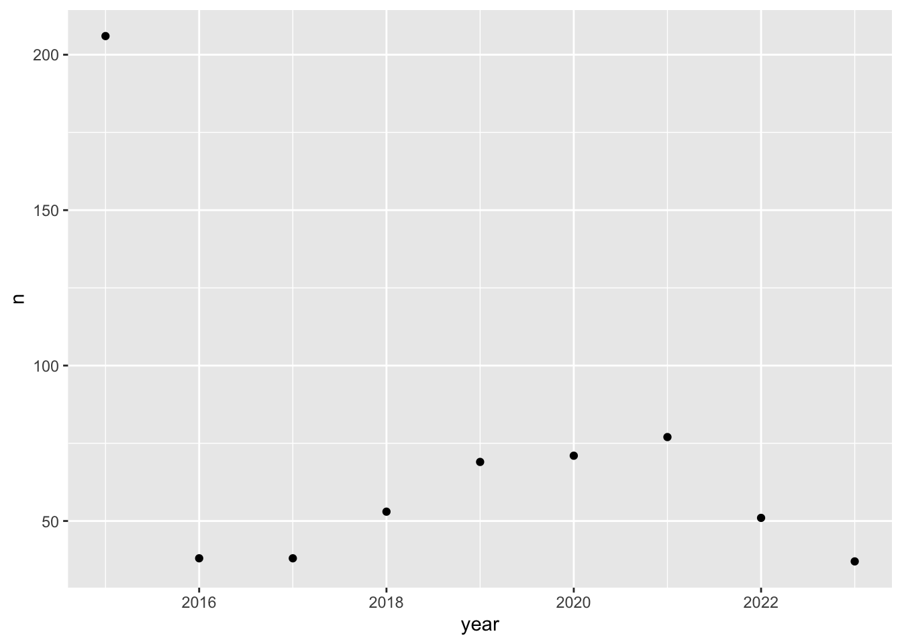
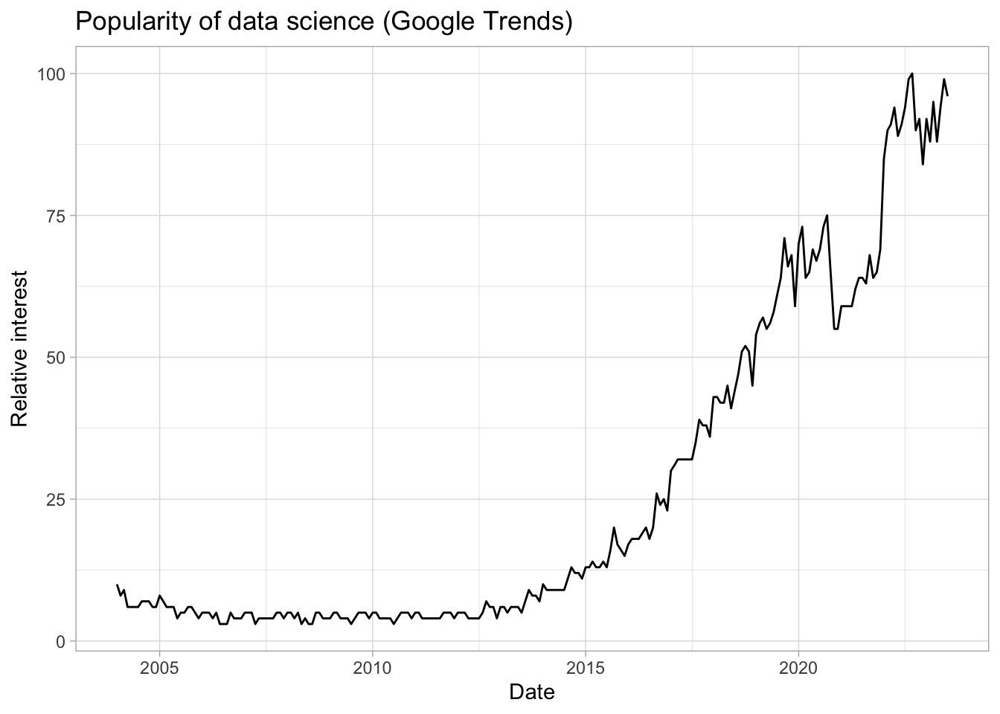

Introduction
::: justify
Goals of the class
- Apply
- Giving you the will to continue and to apply
- Study variations and relationship with statistics
Prerequisites
This class requires no experience in programming and it is for complete beginners to accompany you to use R. Some of you might have already learnt it and you will be faster than the others, do not hesitate if you want extra.
Evaluation
To learn R, you have to practice. And this is why the evaluation will be based on regular exercises :
- Each one will be graded on 5points which will give you a note of 20 at the end of the semester
A motivation for this class : what is programming and why would we need it in social sciences
Before we start, I think it is necessary to give a few words about why we are doing this. Learning Rstudio means learn how to code, how to program : why should we do that as social scientists ? Why would we even bother to learn that stuff that looks complicated ? Why do not just used excel to do some calculations ? R is a programming language, programming means giving instrucgtions to a computer in order to realize some tasks. And we use a software to do this because it is easier.
You might be thinking, “I’ve already learned Excel and can perform some data analysis tasks with it. Why should I bother learning to code in a seemingly complex language?”, SPSS or SAS, STATA
However, this has the disadvantage of having less comprehensive documentation compared to other languages like STATA.
To analyze quantitative data, we need a computer to help us to do some tasks such as accessing, manipulating data, vizualizing it and modelling it. To ask our computer to do it, we usaully rely on a software and there are of different kind in the market. You probably all know excel or you would have heard of STATA, SPSS or SAS. However, the trend is to use R and has becoming more and more popular.
I really want to make a case for why this class is very important.
Why programming and what is could be useful for :
Data manipulation
But also lot of fancier stuff that are more and more used in social sciences (web scraping, social networks analysis, maps, text analysis, image analysis, machine learning)
This class is just intro so we will not cover all of these but I can give you more ressources if you want to learn and at the end of this class, you should be definitely able to go in depth by yourself in some of these topics.
Reproducibility
Reproducibility is that the same analysis can be exactly redone given the code and the data. First, your future you. Second other people. See Gelman 2016 as well.
Reproducibility or Replicatioon ?
Another reason why it is useful doing this is reproducibility. You might have heard of the “replication crisis” in science. During the last decades, people have tried to replicate analysis made by others and usually they did not succeed.
This has led most journals to condition publication upon you provide code, data and that they are able to reproduce your results. Nowadays, if you want to publish in a journal using quantitative data, almost all of them will ask your for your replication code.

This is important because, it gives more transparency of the decisions you make as a quantitative researcher. Quantitative analysis requires a lot of choices on how you choose your variables, how you recode them, you compute summary, which observations you keep and you discard. By having everything in a code that everyone can look at is a good practice. Coding helps you reflect on what you do with the data. Looking at the code of others make you more critical of their research.
Computational social sciences
Rise of computational social sciences
Valuable skills on the job market
- Learning skills that will be really valuable on the job market (academia, industry, public administration) : many position that requires getting data, sumamrizing it and analyzing it.
If you think about
Even if you want to pursue a career in an other sector, “data science” skills are also really valuable and trendy.

- More and more jobs require to analyze data, and there are more and more data due to digitalization.
In you want to continue in academia, quantitative skills and programming are highly valuable and pre-requisite for many positions. Journals also more and more ask for replications code when you want to publish an article in order that the other could replicate your findings. In political science, R is more and more the dominant language.
Programming as a qualitative researcher ?
This class teaches you how to use programming to analyze data in a quantitative fashion. Programming is usually associated with quantitative research in social sciences because it is useful to analyze a large number of data. If you are a more qualitative researcher, you might be frightened by all of this, why you would learn all of that stuff and I need to convince you that it is still useful to learn for different reasons. Yet, here a few incentives for people who may qualify themselves are more qualtitative research to invest some resources in learning this.
At the end, the beauty of programming is automation and you can also automate some tasks in qualitative research.
First, Let yourself be surprised. Many people start this master having no intention at all to do quantitative analysis and eventually they do
Collecting data and storing data: web scraping, eg : online ethnography of a social media but you would still need to collect that data and you will quickly learn that copy and post social media post in a word file is not the way to go.
Describe data, contextualize : you might have access to many documents, interviews but have some trends
Formatting data : programmation :
- image to text
- speech to text
- Then, even if the core of your research is qualitative, you could be more convincing by adding some descriptive graphs to depict the broader universe of your topic, do some descriptive statistics to contextualize your interviews and so on., you could suprisingly discover a dataset that is super useful for you research and have tha ability yo analyze it even if at first sight you would not have do so
- If you want to analyze reports, text qualitatively, programming can however be a useful way to automate their collection online and to efficiently store them. You could also have a inductive automated text analysis of your document before going through a careful reading of them.
- Finally, recent advances in AI have made it possible, with just a few lines of code, to have very high quality automatic audio-to-text transcriptions for interviews. A knowledge of programming makes this type of algorithm easy to use (have a look on this tuto with python : )
Why R ?
It s free, open source, built by a community of people, people adapt the language to new tools
Specialized in statistics
But high learning curve : learning R is quite difficult at the begining. And the best thing to do to learn it is to have a goal.
Why not Python ? Python also highly valuable skills and more popular in industry in general. Moreover, if you are interested in recent machine learning techniques and text analysis, everything that is developed is in Python. Python is more general, more flexible because less abstraction